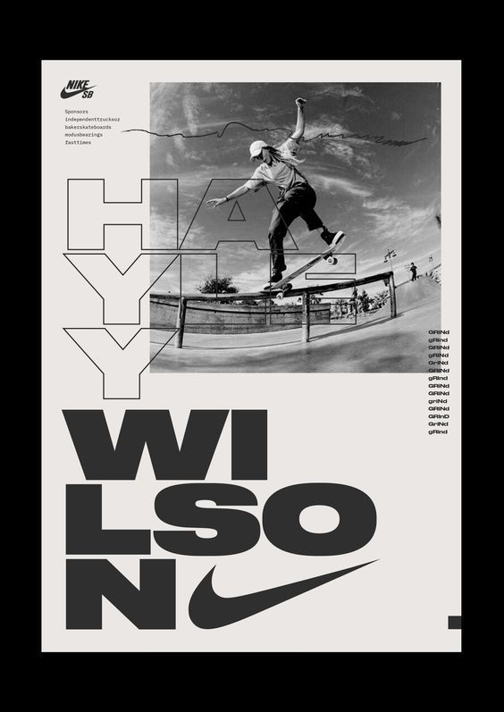
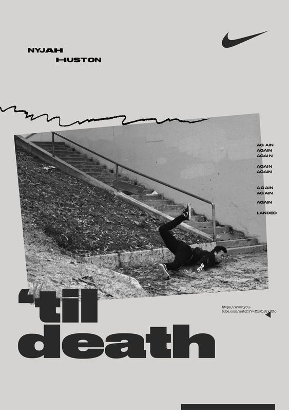
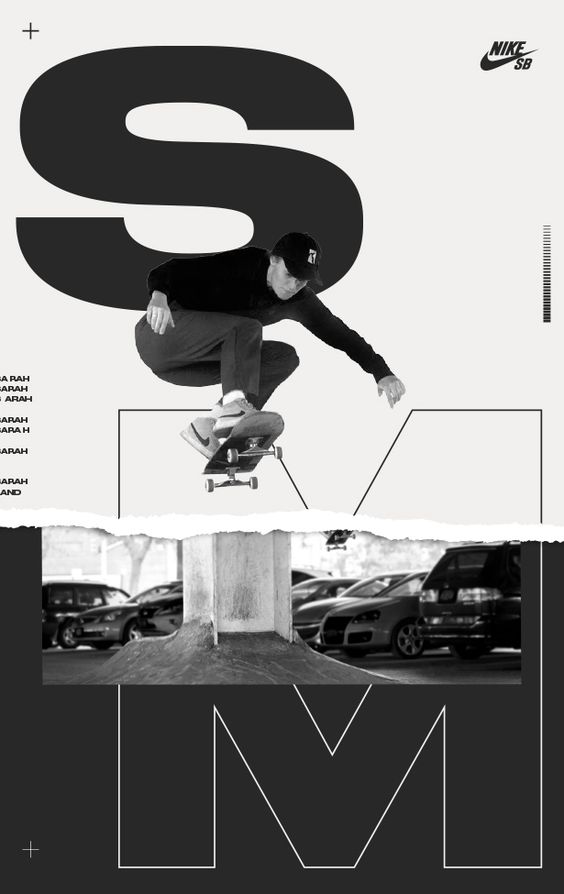
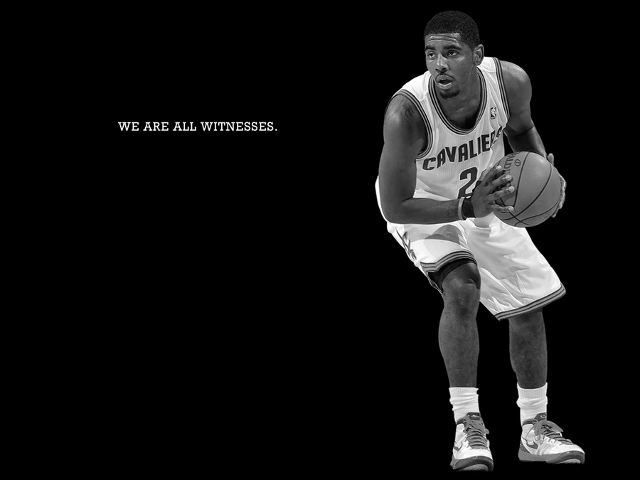
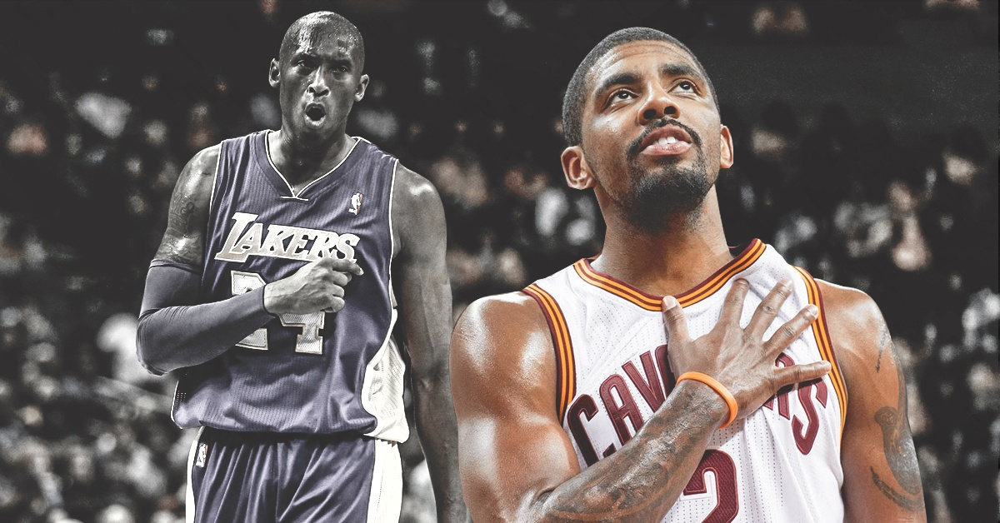
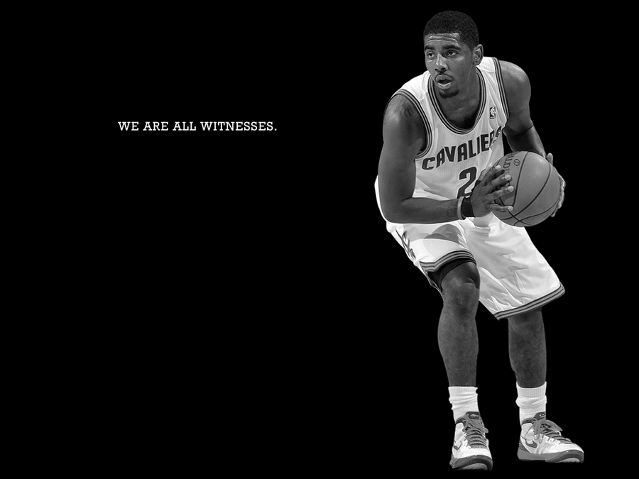
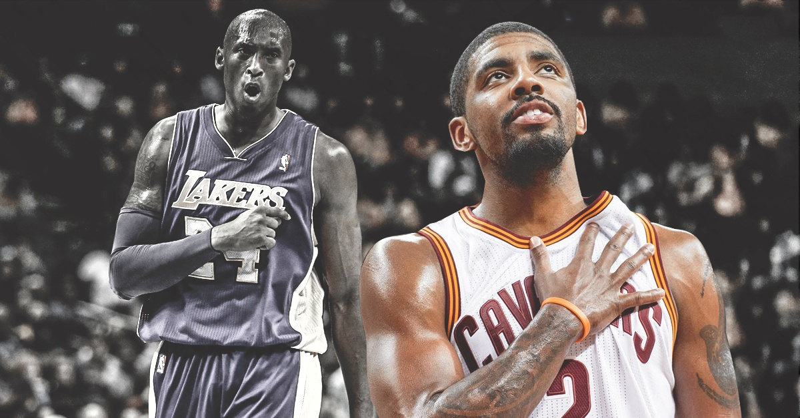

Biểu tượng Nike swoosh là một trong những hình ảnh thương hiệu đơn giản nhưng hiệu quả nhất thế giới. Cùng với các vận động viên và tín đồ thể thao, millennials thích mua các sản phẩm mang logo Nike. Trên thực tế, 62% thị trường giày thể thao thuộc về Nike. Hình ảnh swoosh có một cuộc sống của riêng mình vì nó đã được cấp bằng sáng chế và cực kỳ phổ biến.
Nike là một tập đoàn Hoa Kỳ có trụ sở tại Quận Washington ở tiểu bang Oregon. Năm 1964, công ty được thành lập bởi Phil Knight và Bill Bowerman. Công ty ban đầu được gọi là Blue Ribbon Sports nhưng đã chuyển sang tên Nike hiện tại vào năm 1971.
Nike có hơn 44.000 nhân viên trên toàn cầu và tổng tài sản của hãng là khoảng 15 tỷ USD. Công ty có hơn 700 cửa hàng trên toàn thế giới và bán nhiều loại trang phục thể thao với bao bì sáng tạo. Đôi giày thể thao phổ biến nhất của nó mang biểu tượng Nike.
Logo Nike, theo một cách nào đó, là loại giao tiếp cảm xúc tốt nhất. Thông qua khẩu hiệu "Just Do It" và các yếu tố hình ảnh, công ty đã nỗ lực thúc đẩy tác động tâm lý của các sản phẩm của mình. "Just do it" là một trong những khẩu hiệu phổ biến nhất trên thế giới. Chỉ trong ba từ, khẩu hiệu đơn giản này trao quyền cho các vận động viên ở khắp mọi nơi để ngừng suy nghĩ quá mức và chỉ cần thực hiện bước đầu tiên. Đó là tất cả những gì có. Tại sao? Bởi vì nếu bạn có một cơ thể, bạn là một vận động viên.



NIKE AIR JORDAN: AN ICON THAT DEFINES YESTERDAY, TODAY AND TOMORROW
Có tin đồn rằng Nike sẽ không thể tồn tại nếu không có hợp đồng lịch sử với Michael Jordan. Chúng ta sẽ không bao giờ tìm ra liệu điều đó có đúng hay không, nhưng chúng ta hãy biết ơn rằng nó vẫn còn với một trò lừa bịp. Một thế giới không có Nike, không có thương hiệu Air Jordan mang tính biểu tượng dường như là một nơi khá không thú vị để sống. Không có nhãn hiệu nào có ảnh hưởng đến ngành công nghiệp giày thể thao toàn cầu như Nike. Nếu không có Michael Jordan, Peter Moore, Bruce Kilgore và Tinker Hatfield, có một cơ hội lớn mà tất cả chúng ta sẽ mang giày thể thao đơn giản, không có không khí ngay bây giờ.
Trong khi đầu những năm 80 vẫn được xác định bởi người tiền nhiệm của nó, nửa sau là một thời gian hiệu quả trong ngành công nghiệp giày dép. Hai trong số những đôi giày thể thao mang tính biểu tượng nhất đã được ra mắt trong thập kỷ này: Air Max 1 vào năm 1987 và rõ ràng là Air Jordan, ba năm trước đó. Trong thời đại mà mọi người đều mang giày thể thao cao cấp màu trắng hoặc Converse cổ điển, Air Jordan màu đỏ và đen theo nghĩa đen đến như một luồng không khí trong lành.
Vào cuối năm 1984, Nike Air Jordan 1 đã trở thành một sự kiện. Không phải bản thân mô hình, mà là màu sắc đã tạo ra sự khác biệt. Michael Jordan xuất hiện trên sân bóng rổ với trang phục Chicago Bulls và đôi giày thể thao phù hợp với màu đen và đỏ. NBA có đầu óc truyền thống nhanh chóng quyết định rằng loại giày dép không chính thống này không thuộc về trò chơi. Vô tình, họ đã tạo ra một sự cường điệu thậm chí còn lớn hơn. Trẻ em thực sự sẽ tấn công cho một cặp Air Jordans.
 


